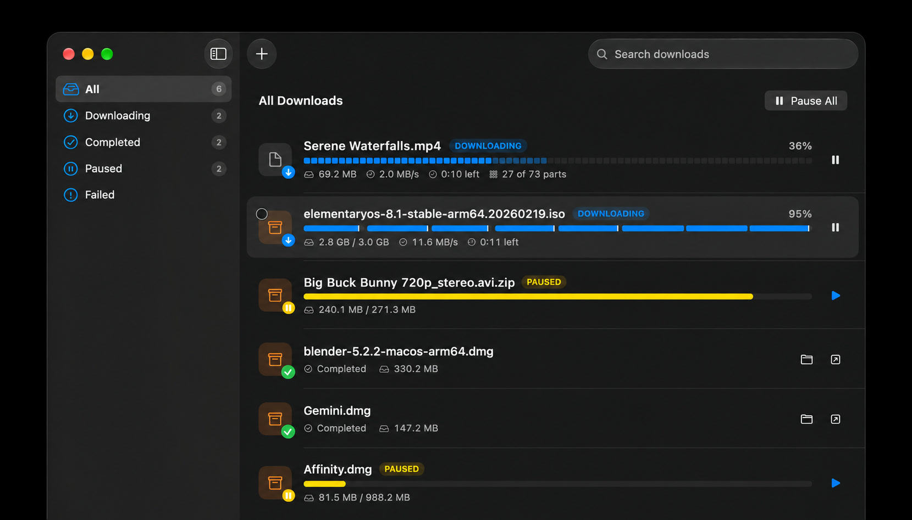
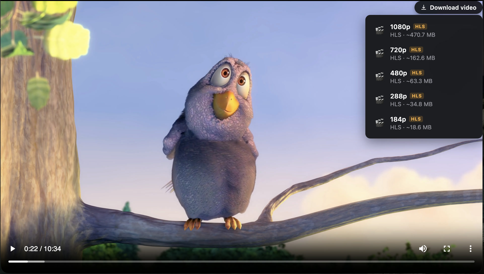
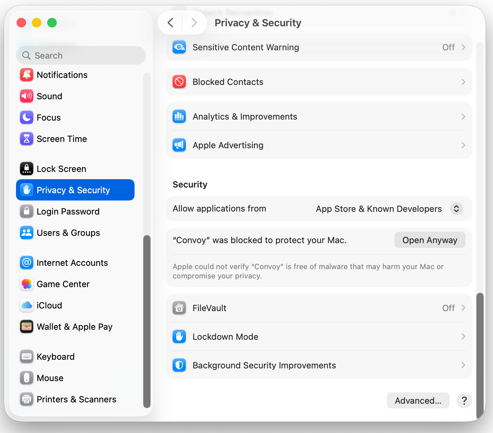

Download manager · macOS
Stop waiting
on downloads.
Convoy splits every file into as many as sixteen segments and fetches them at once — and it picks downloads up straight from your browser, cookies, logins and all.
Free and open source, GPLv3. Not signed with an Apple certificate yet — the install guide covers the first launch.
A look at it
Built like a Mac app, because it is one.

the main window — several downloads running at different progress
the extension catching a download, or the video button on a page

the format picker, or a stream being merged
What it does
The parts that matter, done properly.
No account, no telemetry, no upsell. It downloads files and then gets out of the way.
Segmented downloads
One file split into 1–16 segments, all fetched at once. Servers that won't do byte ranges fall back to a single stream automatically.
Browser integration
Chrome, Brave, Edge, Vivaldi, Opera, Arc and Chromium today, with more coming shortly. Cookies and headers come along, so downloads behind a login just work.
Video streams
If a page can play it, Convoy can fetch it. Every format we’ve thrown at it, at least — and we’ve thrown a lot.
YouTube
Through yt-dlp, which the app fetches on request from Settings and keeps current. Nothing is bundled.
Pause and resume
Start, stop, pause, resume — whenever you like. Quit halfway through and Convoy picks up exactly where you left off.
Queue and menu bar
Filter by status, search by name, and watch what's running from the menu bar with Pause All and Resume All.
Notifications
When a download finishes, with an optional sound. Light, dark, or whatever the system is doing.
Storage cleanup
Finds what interrupted downloads left behind and clears it when you ask. Nothing is deleted on its own.
Fully open source
Every line of it is on GitHub, under the GPL. The download engine is a separate library you can use on its own.
How the browser part works
Your browser hands the file over, and stops.
Four steps, and you never think about any of them again.
The extension catches the download
A download starting, a right-click on a link or a video found on the page. It collects the URL, the referrer, and the cookies and headers that request would have used.
It passes that to a small binary inside the app
A native messaging host the browser launches directly — one of the two executables in the app bundle.
Which hands it straight to the app
And that’s it. Nothing to install, nothing to configure, nothing leaves your Mac. Yes, it really is that simple.
Convoy takes it from there
It picks the download up and manages the rest — segments, speed, pause and resume.
Install
Getting it running.
Pick an installer, then add the extension to each browser you want it to watch.
Convoy installer
Convoy-1.0.0.pkg · 4.2 MB · universal
1. Open the downloaded .pkg. macOS will refuse it the first time, because it isn’t signed with an Apple certificate.
2. Go to System Settings → Privacy & Security, scroll down, and choose Open Anyway next to the blocked installer.
3. Run through the installer. It asks for your admin password, and puts Convoy in /Applications.
4. Open Convoy. No further warnings — the installer places the app without the quarantine flag, so the first launch is clean.
Why this one: fewer steps, and the app opens normally afterwards. The trade is that it asks for an admin password.
Disk image
Convoy-1.0.0.dmg · 5.5 MB · universal
1. Open the .dmg and drag Convoy onto the Applications folder.
2. Open Convoy once. macOS refuses and offers only Done — that’s expected.
3. Go to System Settings → Privacy & Security, scroll down, and choose Open Anyway. Do this within an hour of step 2, or start again.
4. Confirm the second dialog and authenticate. Convoy opens, and won’t ask again.
If macOS says the app is damaged, run xattr -dr com.apple.quarantine /Applications/Convoy.app and open it again.
No admin password needed, but more steps — and the warnings are worded alarmingly. They’re the same warnings every un-notarized Mac app gets.

macOS 14 (Sonoma) or later. One universal build for Apple silicon and Intel.
Every release ships a .sha256 beside each file if you want to check what you downloaded — and Convoy updates itself from here on, signed with its own key.
Convoy asks for no entitlements and no special permissions. It reads and writes the folder you download into, and talks to the browsers you set up.
Then the extension, once per browser
- On first launch Convoy asks which browsers to set up. Settings → Browser does the same later.
- Open the browser's extensions page —
chrome://extensions— and turn on Developer mode. - Drag the folder Convoy points you at onto that page, or use Load unpacked. There's a button in Settings that opens it.
- Convoy keeps that copy up to date on its own; browsers pick up changes when they restart.
What it doesn't do
- Safari. Apple's extension route needs a paid certificate.
- Firefox. Needs its own build of the extension; not there yet.
- The Mac App Store. Doesn't allow apps in this category.
- Torrents. Convoy downloads over HTTP and HLS/DASH, nothing else.